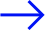

polish
multimedia
artist,
based
in copenhagen
Sporo Wody
Sporo Wody
Sporo Wody
(plenty of water eng.)
(plenty of water eng.)
Building projection mapping in Wrocław (PL) at the invitation of Kino Murale - the biggest projection festival in Central Europe. Together with three other artists, we were able to install a 25m x 12m projection with music composed exclusively for this occasion.
see more
Building projection mapping in Wrocław (PL) at the invitation of Kino Murale - the biggest projection festival in Central Europe. Together with three other artists, we were able to install a 25m x 12m projection with music composed exclusively for this occasion.
see more
multimedia artist, born in 97'. In art, he draws attention to the interpenetration of image, sound and ideas, their coexistence, random interactions, relationships and the influence they have on each other. Nostalgia and hypnagogy, are leitmotifs of Kurkiewicz's work, drawing from subconscious feelings and instincts.